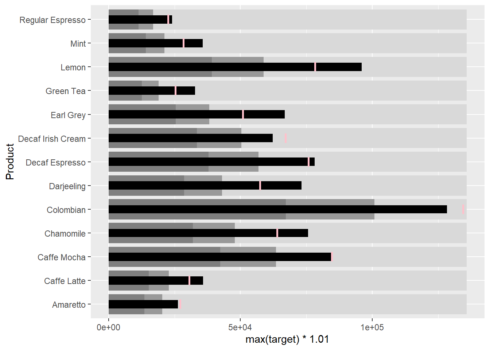
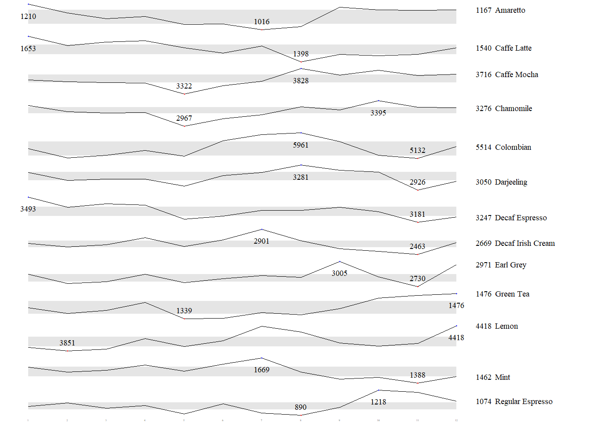

pacman::p_load(lubridate, ggthemes, reactable,
reactablefmtr, gt, gtExtras, tidyverse)Hands-on_Ex10
Information Dashboard Design - R Method
Installing and launching R packages
Import Data Set
coffeechain <- readr::read_rds("data/CoffeeChain.rds")Plot Bullet Chart - ggplot2 function
Aggregate Sales & Budgets Sales (Product-level)
product <- coffeechain %>%
group_by(`Product`) %>%
summarise(`target` = sum(`Budget Sales`),
`current` = sum(`Sales`),
.groups = "drop"
) Plot Bullet Chart
suppressWarnings({
ggplot(product, aes(Product, current)) +
geom_col(aes(Product, max(target) * 1.01),
fill="grey85", width=0.85) +
geom_col(aes(Product, target * 0.75),
fill="grey60", width=0.85) +
geom_col(aes(Product, target * 0.5),
fill="grey50", width=0.85) +
geom_col(aes(Product, current),
width=0.35,
fill = "black") +
geom_errorbar(aes(y = target,
x = Product,
ymin = target,
ymax= target),
width = .4,
colour = "pink",
size = 1) +
coord_flip()})
Plot Sparklines - ggplot2 function
Data Preparation
sales_report <- coffeechain %>%
filter(Date >= "2013-01-01") %>%
mutate(Month = month(Date)) %>%
group_by(Month, Product) %>%
summarise(Sales = sum(Sales)) %>%
ungroup() %>%
select(Month, Product, Sales)`summarise()` has regrouped the output.
ℹ Summaries were computed grouped by Month and Product.
ℹ Output is grouped by Month.
ℹ Use `summarise(.groups = "drop_last")` to silence this message.
ℹ Use `summarise(.by = c(Month, Product))` for per-operation grouping
(`?dplyr::dplyr_by`) instead.Compute minimum, maximum and month-end sales
mins <- group_by(sales_report, Product) %>%
slice(which.min(Sales))
maxs <- group_by(sales_report, Product) %>%
slice(which.max(Sales))
ends <- group_by(sales_report, Product) %>%
filter(Month == max(Month))Compute 25 and 75 quantiles
quarts <- sales_report %>%
group_by(Product) %>%
summarise(quart1 = quantile(Sales,
0.25),
quart2 = quantile(Sales,
0.75)) %>%
right_join(sales_report)Joining with `by = join_by(Product)`Plot Spark Lines
suppressWarnings({
ggplot(sales_report, aes(x = Month, y = Sales)) +
facet_grid(Product ~ ., scales = "free_y") +
geom_ribbon(data = quarts, aes(ymin = quart1, ymax = quart2),
fill = 'grey90') +
geom_line(size = 0.3) +
geom_point(data = mins, col = 'red') +
geom_point(data = maxs, col = 'blue') +
geom_text(data = mins, aes(label = Sales), vjust = -1, size = 2.5) +
geom_text(data = maxs, aes(label = Sales), vjust = 2.5, size = 2.5) +
geom_text(data = ends, aes(label = Sales), hjust = 0, nudge_x = 0.5, size = 2.5) +
geom_text(data = ends, aes(label = Product), hjust = 0, nudge_x = 1.0, size = 2.5) +
expand_limits(x = max(sales_report$Month) +
(0.25 * (max(sales_report$Month) - min(sales_report$Month)))) +
scale_x_continuous(breaks = seq(1, 12, 1)) +
scale_y_continuous(expand = c(0.1, 0)) +
theme_tufte(base_size = 3) +
theme(
axis.title = element_blank(),
axis.text.y = element_blank(),
axis.ticks = element_blank(),
strip.text = element_blank()
)
})
Static Information Dashboard Design - gt and gtExtras methods
Using gt
product %>%
gt::gt() %>%
gt_plt_bullet(column = current,
target = target,
width = 60,
palette = c("lightblue",
"black")) %>%
gt_theme_538(quiet = TRUE)| Product | current |
|---|---|
| Amaretto | |
| Caffe Latte | |
| Caffe Mocha | |
| Chamomile | |
| Colombian | |
| Darjeeling | |
| Decaf Espresso | |
| Decaf Irish Cream | |
| Earl Grey | |
| Green Tea | |
| Lemon | |
| Mint | |
| Regular Espresso |
Using gtExtras
- Data Preparation
report <- coffeechain %>%
mutate(Year = year(Date)) %>%
filter(Year == "2013") %>%
mutate (Month = month(Date,
label = TRUE,
abbr = TRUE)) %>%
group_by(Product, Month) %>%
summarise(Sales = sum(Sales)) %>%
ungroup()`summarise()` has regrouped the output.
ℹ Summaries were computed grouped by Product and Month.
ℹ Output is grouped by Product.
ℹ Use `summarise(.groups = "drop_last")` to silence this message.
ℹ Use `summarise(.by = c(Product, Month))` for per-operation grouping
(`?dplyr::dplyr_by`) instead.Code to convert the report data.frame into list columns (required).
report %>%
group_by(Product) %>%
summarize('Monthly Sales' = list(Sales),
.groups = "drop")# A tibble: 13 × 2
Product `Monthly Sales`
<chr> <list>
1 Amaretto <dbl [12]>
2 Caffe Latte <dbl [12]>
3 Caffe Mocha <dbl [12]>
4 Chamomile <dbl [12]>
5 Colombian <dbl [12]>
6 Darjeeling <dbl [12]>
7 Decaf Espresso <dbl [12]>
8 Decaf Irish Cream <dbl [12]>
9 Earl Grey <dbl [12]>
10 Green Tea <dbl [12]>
11 Lemon <dbl [12]>
12 Mint <dbl [12]>
13 Regular Espresso <dbl [12]> Plot Coffeechain Sales Report
report %>%
group_by(Product) %>%
summarize('Monthly Sales' = list(Sales),
.groups = "drop") %>%
gt() %>%
gt_plt_sparkline('Monthly Sales',
same_limit = FALSE)| Product | Monthly Sales |
|---|---|
| Amaretto | |
| Caffe Latte | |
| Caffe Mocha | |
| Chamomile | |
| Colombian | |
| Darjeeling | |
| Decaf Espresso | |
| Decaf Irish Cream | |
| Earl Grey | |
| Green Tea | |
| Lemon | |
| Mint | |
| Regular Espresso |
Add Summary Statistics
report %>%
group_by(Product) %>%
summarise("Min" = min(Sales, na.rm = T),
"Max" = max(Sales, na.rm = T),
"Average" = mean(Sales, na.rm = T)
) %>%
gt() %>%
fmt_number(columns = 4,
decimals = 2)| Product | Min | Max | Average |
|---|---|---|---|
| Amaretto | 1016 | 1210 | 1,119.00 |
| Caffe Latte | 1398 | 1653 | 1,528.33 |
| Caffe Mocha | 3322 | 3828 | 3,613.92 |
| Chamomile | 2967 | 3395 | 3,217.42 |
| Colombian | 5132 | 5961 | 5,457.25 |
| Darjeeling | 2926 | 3281 | 3,112.67 |
| Decaf Espresso | 3181 | 3493 | 3,326.83 |
| Decaf Irish Cream | 2463 | 2901 | 2,648.25 |
| Earl Grey | 2730 | 3005 | 2,841.83 |
| Green Tea | 1339 | 1476 | 1,398.75 |
| Lemon | 3851 | 4418 | 4,080.83 |
| Mint | 1388 | 1669 | 1,519.17 |
| Regular Espresso | 890 | 1218 | 1,023.42 |
Combine data.frame
spark <- report %>%
group_by(Product) %>%
summarize('Monthly Sales' = list(Sales),
.groups = "drop")sales <- report %>%
group_by(Product) %>%
summarise("Min" = min(Sales, na.rm = T),
"Max" = max(Sales, na.rm = T),
"Average" = mean(Sales, na.rm = T)
)sales_data = left_join(sales, spark)Joining with `by = join_by(Product)`Plot Updated data.table
sales_data %>%
gt() %>%
gt_plt_sparkline('Monthly Sales',
same_limit = FALSE)| Product | Min | Max | Average | Monthly Sales |
|---|---|---|---|---|
| Amaretto | 1016 | 1210 | 1119.000 | |
| Caffe Latte | 1398 | 1653 | 1528.333 | |
| Caffe Mocha | 3322 | 3828 | 3613.917 | |
| Chamomile | 2967 | 3395 | 3217.417 | |
| Colombian | 5132 | 5961 | 5457.250 | |
| Darjeeling | 2926 | 3281 | 3112.667 | |
| Decaf Espresso | 3181 | 3493 | 3326.833 | |
| Decaf Irish Cream | 2463 | 2901 | 2648.250 | |
| Earl Grey | 2730 | 3005 | 2841.833 | |
| Green Tea | 1339 | 1476 | 1398.750 | |
| Lemon | 3851 | 4418 | 4080.833 | |
| Mint | 1388 | 1669 | 1519.167 | |
| Regular Espresso | 890 | 1218 | 1023.417 |
Combine Bullet Chart and Sparklines
bullet <- coffeechain %>%
filter(Date >= "2013-01-01") %>%
group_by(`Product`) %>%
summarise(`Target` = sum(`Budget Sales`),
`Actual` = sum(`Sales`)) %>%
ungroup() sales_data = sales_data %>%
left_join(bullet)Joining with `by = join_by(Product)`sales_data %>%
gt() %>%
gt_plt_sparkline('Monthly Sales') %>%
gt_plt_bullet(column = Actual,
target = Target,
width = 28,
palette = c("lightblue",
"black")) %>%
gt_theme_538(quiet = TRUE)| Product | Min | Max | Average | Monthly Sales | Actual |
|---|---|---|---|---|---|
| Amaretto | 1016 | 1210 | 1119.000 | ||
| Caffe Latte | 1398 | 1653 | 1528.333 | ||
| Caffe Mocha | 3322 | 3828 | 3613.917 | ||
| Chamomile | 2967 | 3395 | 3217.417 | ||
| Colombian | 5132 | 5961 | 5457.250 | ||
| Darjeeling | 2926 | 3281 | 3112.667 | ||
| Decaf Espresso | 3181 | 3493 | 3326.833 | ||
| Decaf Irish Cream | 2463 | 2901 | 2648.250 | ||
| Earl Grey | 2730 | 3005 | 2841.833 | ||
| Green Tea | 1339 | 1476 | 1398.750 | ||
| Lemon | 3851 | 4418 | 4080.833 | ||
| Mint | 1388 | 1669 | 1519.167 | ||
| Regular Espresso | 890 | 1218 | 1023.417 |
Interactive Information Dashboard Design - reactable and reactablefmtr methods
Plot Interactive Sparklines
Prepare the list field.
library(reactable)
library(reactablefmtr)report_spark <- report %>%
group_by(Product) %>%
summarize(`Monthly Sales` = list(Sales), .groups = "drop")Plot the sparklines.
reactable(
data = report_spark,
columns = list(
Product = colDef(maxWidth = 200),
`Monthly Sales` = colDef(
cell = function(value) react_sparkline(value)
)
)
)Change the Page Size
Default is 10.
reactable(
data = report_spark,
defaultPageSize = 13,
columns = list(
Product = colDef(maxWidth = 200),
`Monthly Sales` = colDef(
cell = function(value) react_sparkline(value)
)
)
)Add Points & Labels
reactable(
data = report_spark,
defaultPageSize = 13,
columns = list(
Product = colDef(maxWidth = 200),
`Monthly Sales` = colDef(
cell = function(value) react_sparkline(
value,
highlight_points = highlight_points(
min = "red", max = "blue"),
labels = c("first", "last")
)
)
)
)Add Reference Line
reactable(
data = report_spark,
defaultPageSize = 13,
columns = list(
Product = colDef(maxWidth = 200),
`Monthly Sales` = colDef(
cell = function(value) react_sparkline(
value,
highlight_points = highlight_points(
min = "red", max = "blue"),
statline = "mean"
)
)
)
)Add Bandline
reactable(
data = report_spark,
defaultPageSize = 13,
columns = list(
Product = colDef(maxWidth = 200),
`Monthly Sales` = colDef(
cell = function(value) react_sparkline(
value,
highlight_points = highlight_points(
min = "red", max = "blue"),
line_width = 1,
bandline = "innerquartiles",
bandline_color = "green"
)
)
)
)Change from Sparkline to Sparkbar
reactable(
data = report_spark,
defaultPageSize = 13,
columns = list(
Product = colDef(maxWidth = 200),
`Monthly Sales` = colDef(
cell = function(value) react_sparkbar(
value,
highlight_bars = highlight_bars(
min = "red", max = "blue"),
bandline = "innerquartiles",
statline = "mean")
)
)
)